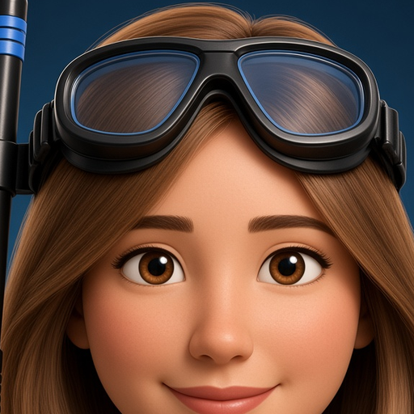

Studio teal
Lab coat, stethoscope, mask and snorkel on her head. This is the hero portrait and the social preview.

Three looks for the same dive doctor: a teal studio, an underwater backlight, and a charcoal still. The home hero uses the first; the rest of the journal rotates the others.
Lab coat, stethoscope, mask and snorkel on her head. This is the hero portrait and the social preview.

Same coat, reef light. Used on Adventures, Dive Notes, and About.
High-contrast still. Shows up on Tips and in trip bylines.